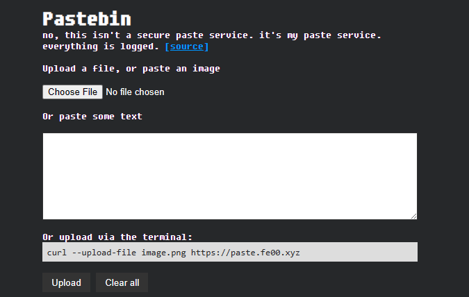

Objective
I write this site using Hugo and wanted a way to quickly upload files and link them in my pages. Adding them to a subfolder and manually linking them would take far too much work, so how about using a webserver that i can copy paste images/text into and then add a direct link to the image!
I found a github project that does just that: hizkifw\tempbin. By default its designed to allow file uploads and to automatically delete them after so many hours. I made some tweaks to the source code to do the following
- Allow the service to return a link with a custom domain
- Removed the file expiration time
- Increased the URL length
- Used the Fixed Sys font
This is my fork that will be used for this blog post.
Here's how it looks!

For the webserver, I needed it to do the following
- Require HTTP basic auth to password protect the upload page
- Require zero authentication for the uploaded pastes
I'm going to show you how I set this up. Note that I have a separate NAT'd server running the tempbin service. Proxy Pass is used on the main server
Setting up tempbin
Install Cargo. Tempbin is built with Rust
curl https://sh.rustup.rs -sSf | shClone the repository
git clone https://github.com/peterunix/tempbin.git /opt/Run the service
LISTEN=0.0.0.0:80 DOMAIN=paste.fe00.xyz /home/USER/.cargo/bin/cargo runTerminate the process. We're going to create a systemd unit to automatically start it on boot.
vim /etc/systemd/system/pastebin.servicePlace this in the contents of that file
[Unit]
Description=My Service
After=network.target
[Service]
User=root
WorkingDirectory=/opt/tempbin
ExecStart=bash -c 'cd /opt/tempbin ; LISTEN=0.0.0.0:80 DOMAIN=paste.fe00.xyz /home/USER/bin/cargo run'
Restart=always
RestartSec=5
[Install]
WantedBy=multi-user.targetNow load the service and check if its running
systemctl daemon-reload
systemctl enable --now pastebin
systemctl status pastebinAdding it to nginx
As noted earlier, I have nginx running on another server and use Proxy Pass to make the pastebin service accessible.
Use htpasswd to generate a credential file for our authentication
apt install apache2-utils
htpasswd -c /etc/nginx/.htpasswd USERNAMENow add a server block for our proxied tempbin service
vim /etc/nginx/sites-enabled/YOUR_WEBSITEThis will require authentication for the root folder. The second location block is a regex that will find any subfolder that contains between 4-15 characters. I since reduced the size of the automatically generated url for my server; that's why there's a range.
server {
listen 443 ssl http2;
listen [::]:443 ssl http2;
server_name paste.fe00.xyz;
# ...
location / {
auth_basic "Restricted Access"; # Authentication realm
auth_basic_user_file /etc/nginx/.htpasswd; # Path to the .htpasswd file
proxy_pass http://10.10.10.3;
}
# Allow the subfolders access without authentication
location ~ "^/([0-9a-zA-Z]{4,15})" {
auth_basic off;
proxy_pass http://10.10.10.3;
}
#...
}Check your nginx config and then restart the service.
nginx -t
nginx: the configuration file /etc/nginx/nginx.conf syntax is ok
nginx: configuration file /etc/nginx/nginx.conf test is successful
systemctl restart nginx